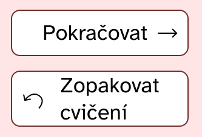

Název ZUZEL vznikl od spojení mozkový uzel autorek ZUZky a ELišky.
Na barvy aplikace jsme si kvůli přístupnosti udělali analýzu kontrastu. Výsledek WCAG testu je 8,3 :1.
Použili jsme písmo Atkinson Hyperlegible, které je speciálně navrženo tak, aby bylo co nejsrozumitelnější i pro slabozraké.
Velikost textu používáme nejméně 32px. Kvůli lepší čitelnosti se vyhýbáme textu s velkými písmeny.Text vkládáme do ohraničených polích s bílým pozadím.
K tlačítkům přidáváme ikony pro lepší rozpoznávání
Aplikace je pro lepší porozumění doprovázena zvuky.
První návrh aplikace

Finální návrh aplikace